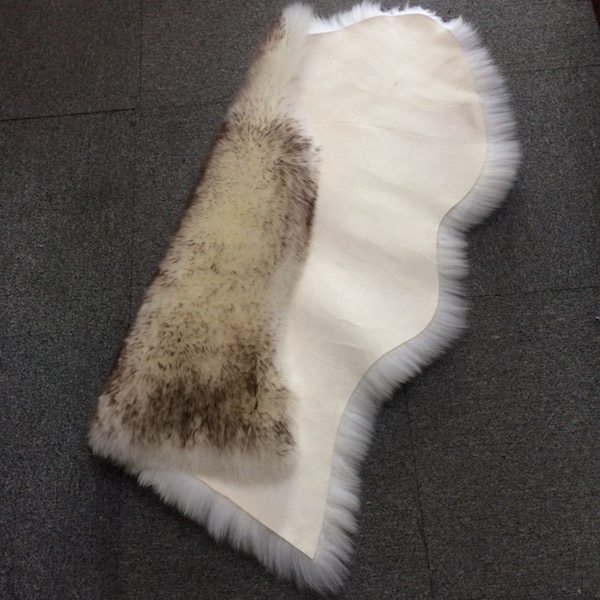

Natural New Zealand Sheepskin Double Rug
$225.99
Spacious double sheepskin rug crafted from premium New Zealand sheepskin. Long wool fibers create a luxuriously soft surface. Ideal for living rooms, master bedrooms, or studio spaces.
Specifications
- Material: 100% New Zealand Sheepskin
- Wool Length: Long Wool (40-70mm)
- Size: 2' x 6' (Double)
- Origin: New Zealand
- Color: Natural Cream
- Features: Durable, Soft, Natural Properties